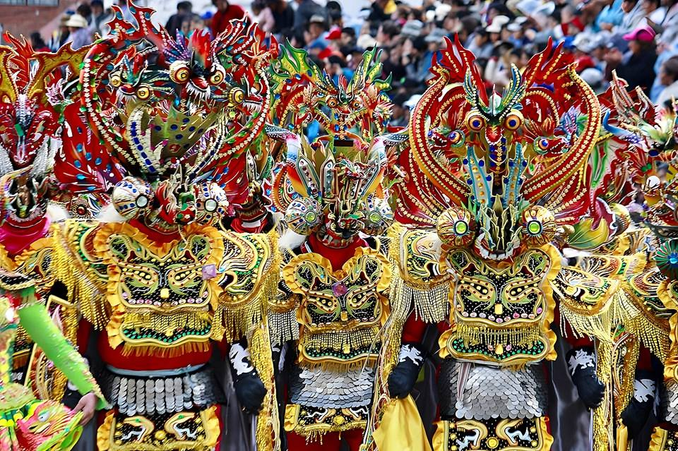
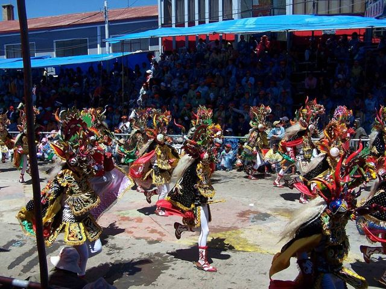
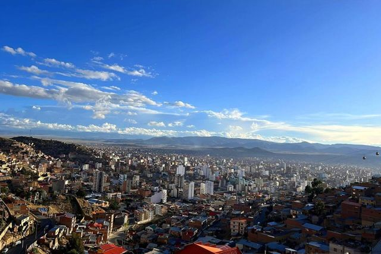
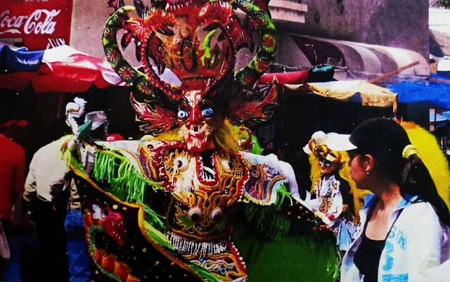
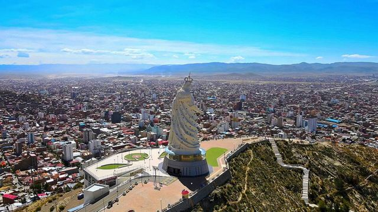
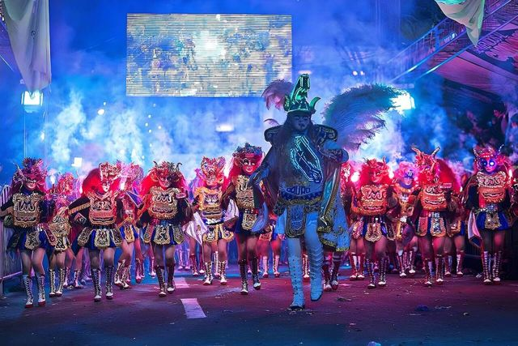
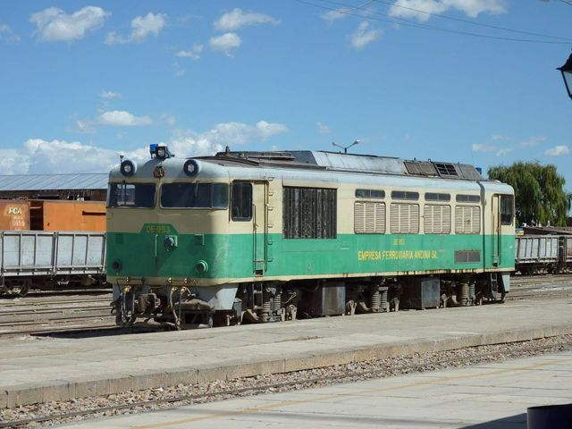

Oruro
Departamento de Oruro · Ciudades

Oruro es una ciudad minera del Altiplano, sencilla y trabajadora, conocida por uno de los carnavales más grandes de Sudamérica, reconocido por la UNESCO, con sus diabladas. El resto del año se puede subir en teleférico hasta la gran estatua de la Virgen del Socavón, y de aquí sale el tren a Uyuni.
Qué hacer
- Museo y mina del Socavón
- Teleférico hasta la Virgen del Socavón
- Carnaval (febrero o marzo)
Qué comer
- CharqueCarne de llama o de res seca y deshilachada, frita, con mote, huevo y queso.
- Sajta de polloPollo en salsa amarilla de ají, con chuño y papa. Típico del Altiplano.
- FricaséSopa de cerdo picante con ají amarillo y mote, famosa por curar la resaca.
También aquí
- Fiestas · UNESCO Carnaval de OruroEl carnaval más grande de los Andes: decenas de miles de bailarines enmascarados, diabladas y morenadas, desfilan casi veinte horas hasta el santuario del Socavón.
- Mitos y leyendas Wari y las plagas de OruroEl dios Wari mandó un sapo, un lagarto, una víbora y hormigas para castigar al pueblo de Oruro. Una ñusta los convirtió en piedra: todavía se los ve alrededor de la ciudad.
Cómo llegar a Oruro
Uru Uru Carretera (bus, auto) · 15 a 30 min
Taxi o minibús desde Oruro.
Machacamarca Carretera (bus, auto) · 30 min
Minibús o taxi desde Oruro.
Obrajes Carretera (bus, auto) · 30 a 45 min
Minibús desde Oruro.
La Paz Carretera (bus, auto) · 3 h 30 a 4 h
Buses cada 30 minutos.
Sajama Carretera (bus, auto) · 4 h
Auto o tour (pocos buses).
Chipaya Carretera (bus, auto) · 3 a 4 h
Transporte desde el mercado Avaroa de Oruro, pocas salidas: confirma el día anterior.
Se suele llegar tarde: prevé el alojamiento.
Cochabamba Carretera (bus, auto) · 4 a 5 h
Buses frecuentes desde la Terminal de Cochabamba.
Potosí Carretera (bus, auto) · 5 a 6 h
Buses frecuentes.
Uyuni Carretera (bus, auto) · 6 a 7 h
Buses desde la Terminal de Oruro.
Uyuni Tren · 7 h
Trenes de FCA, el Expreso del Sur y el Wara Wara del Sur, con pocas salidas por semana (revisa los horarios en fca.com.bo).
Lo más cómodo y lindo: flamencos a orillas del lago Poopó.
Fotos de Oruro

.JPG){kind=link}










Otros lugares de la región
 Parque Nacional SajamaLa cumbre más alta de Bolivia (6542 m), géiseres, aguas termales y llamas.
Parque Nacional SajamaLa cumbre más alta de Bolivia (6542 m), géiseres, aguas termales y llamas. Curahuara de CarangasLa «Capilla Sixtina del Altiplano»: un templo de adobe cubierto de pinturas murales.
Curahuara de CarangasLa «Capilla Sixtina del Altiplano»: un templo de adobe cubierto de pinturas murales. Aguas termales de Obrajes y CapachosPiscinas de agua caliente natural en el Altiplano, a menos de una hora de Oruro.
Aguas termales de Obrajes y CapachosPiscinas de agua caliente natural en el Altiplano, a menos de una hora de Oruro. Museo Ferroviario de MachacamarcaViejas locomotoras a vapor e historia del tren minero, al sur de Oruro.
Museo Ferroviario de MachacamarcaViejas locomotoras a vapor e historia del tren minero, al sur de Oruro. Lagos Uru Uru y PoopóLagos poco profundos del Altiplano, a las puertas de Oruro, donde llegan los flamencos.
Lagos Uru Uru y PoopóLagos poco profundos del Altiplano, a las puertas de Oruro, donde llegan los flamencos. ChipayaEl pueblo de los uru-chipaya, uno de los pueblos más antiguos de los Andes, con casas redondas de tierra.
ChipayaEl pueblo de los uru-chipaya, uno de los pueblos más antiguos de los Andes, con casas redondas de tierra. Salar de CoipasaEl segundo salar más grande de Bolivia, salvaje y casi sin visitantes.
Salar de CoipasaEl segundo salar más grande de Bolivia, salvaje y casi sin visitantes. UyuniPueblo base de los tours al Salar, con un cementerio de trenes a la salida.
UyuniPueblo base de los tours al Salar, con un cementerio de trenes a la salida. Salar de Uyuni + Sud Lípez (tour)El salar más grande del mundo y luego las lagunas de colores del Sud Lípez. Lo mejor de muchos viajes.
Salar de Uyuni + Sud Lípez (tour)El salar más grande del mundo y luego las lagunas de colores del Sud Lípez. Lo mejor de muchos viajes. TupizaPaisajes de western: cañones rojos, cactus y la última huida de Butch Cassidy.
TupizaPaisajes de western: cañones rojos, cactus y la última huida de Butch Cassidy.- CotagaitaPueblo verde de un valle frutícola, en el camino de Potosí a Villazón.
 VillazónLa frontera con Argentina, frente a La Quiaca: el paso más usado por los viajeros.
VillazónLa frontera con Argentina, frente a La Quiaca: el paso más usado por los viajeros.